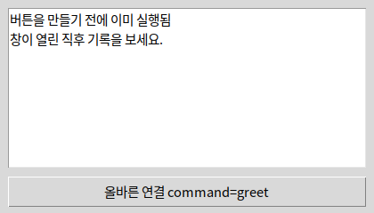
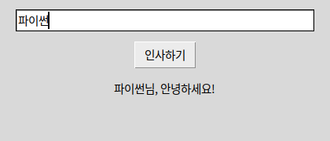
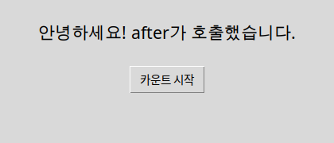
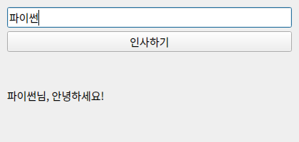

command=greet · clicked.connect(greet)함수 자체를 맡깁니다. greet()는 지금 호출입니다. 아래 웹 예제에서 괄호 유무를 먼저 보세요.
 인공지능 파이썬 실무
인공지능 파이썬 실무Ⅱ. GUI 프로그래밍 · 주제 05 / 11
버튼 생성 시점과 클릭 시점은 다릅니다.
대단원 Ⅱ. GUI 프로그래밍 교과서 40–59쪽
중단원 02. GUI 프로그래밍 작성 · 49–57쪽
소단원 01. tkinter의 구성 요소 · 50–51쪽
중단원 02. GUI 프로그래밍 작성 · 49–57쪽
소단원 02. GUI 앱 개발 · 52–55쪽
이 웹 주제의 연계 범위: 51, 54쪽 + 보강
웹 학습 주제 05 / 11
버튼 생성 시점과 클릭 시점은 다릅니다.
| 코드 | 실행 시점 | 결과 |
|---|---|---|
| command=hello | 클릭할 때 | 함수를 전달 |
| command=hello() | 화면 만들 때 | 반환값을 전달 |
| bind("<Return>") | Enter 키를 눌렀을 때 | 키 이벤트와 함수 연결 |
| after(ms, fn) | 지정한 시간 뒤 | 이벤트 루프를 막지 않음 |
| clicked.connect(hello) | Qt 클릭할 때 | 시그널과 슬롯 연결 |
| textChanged | 입력이 바뀔 때 | 미리보기·검사 |
BEFORE THE CODE
새 이름·속성이 코드에 나오기 전에 짧게 봅니다. 외우기보다 역할을 먼저 구별하세요.
command=greet · clicked.connect(greet)함수 자체를 맡깁니다. greet()는 지금 호출입니다. 아래 웹 예제에서 괄호 유무를 먼저 보세요.
나중에 사건이 나면 불러 달라고 맡기는 함수입니다. tkinter는 command, Qt는 connect입니다.
HISTORY / VIDEO
GUI는 코드를 위에서 아래로 끝내지 않고, 클릭·키 입력이 올 때까지 루프에서 기다립니다. 이 사건 기반 방식은 Xerox PARC의 Smalltalk 이후 창 프로그램의 기본이 되었습니다.
Tkinter Course — Create Graphic User Interfaces in Python Tutorial (freeCodeCamp) ↗
영어 공개 강의입니다. Button을 만드는 구간에서 command에 함수를 맡기는 것만 보면 됩니다. 학교 네트워크·연령 정책을 확인하세요.
RESULT PREVIEW

콜백은 나중에 호출할 함수입니다. command=greet는 함수 자체를 전달합니다. command=greet()는 지금 함수를 실행하고 반환값을 전달하므로 의도와 다릅니다. 인자가 필요하면 lambda: greet(name)처럼 호출을 감쌉니다.
tkinter의 mainloop는 이벤트 루프입니다. PySide6에서는 clicked.connect(greet)로 버튼의 시그널과 함수를 연결하고 app.exec()로 이벤트 루프를 시작합니다. connect(greet())도 같은 이유로 잘못된 사용입니다.
입력 변화는 tkinter의 bind나 변수 추적, PySide6의 textChanged 같은 시그널로 다룰 수 있습니다. GUI 이벤트 안에서 긴 반복·time.sleep을 실행하면 화면 반응이 늦어집니다. 주기 작업에는 after 또는 QTimer를 사용하고 긴 작업 분리는 심화 주제로 다룹니다.
이벤트 전용 예제부터 보세요. 웹의 콜백 예제는 괄호 유무만 추적하고, command 비교 창은 잘못된 연결이 생성 시점에 실행되는 모습을 보여 줍니다. bind는 Enter 키, after는 기다림, Qt는 clicked와 textChanged입니다. 인사 앱(hello-tk / hello-pyside)은 같은 원리가 실제 입력창에 붙은 완성 예입니다. 콜백 안에서 time.sleep을 쓰지 마세요.
예제를 선택하면 바로 아래에서 코드를 수정하고 실행할 수 있습니다. 작성한 코드는 예제별로 저장됩니다.
BEFORE THE CODE
새 이름·속성이 코드에 나오기 전에 짧게 봅니다. 외우기보다 역할을 먼저 구별하세요.
command=greet함수 이름만 넘깁니다. 클릭(또는 나중에 right())할 때 실행됩니다.
command=greet()괄호가 있으면 버튼을 만드는 순간에 실행되고, command에는 반환값(없으면 None)이 들어갑니다.
나중에 사건이 났을 때 불러 달라고 맡겨 두는 함수입니다.
command=say_hello는 버튼을 클릭할 때 실행됩니다. 생성 직후가 아닙니다.
HISTORY / VIDEO
콜백은 ‘지금 실행’이 아니라 ‘사건이 나면 불러 달라’고 맡기는 함수입니다. 버튼 생성 때 greet()처럼 괄호를 붙이면, 클릭 전에 이미 실행됩니다.
BEFORE THE CODE
새 이름·속성이 코드에 나오기 전에 짧게 봅니다. 외우기보다 역할을 먼저 구별하세요.
tk.Button(parent, command=greet)함수 객체를 보관합니다. 클릭하면 greet()가 실행됩니다.
tk.Button(parent, command=too_early())버튼을 만드는 줄에서 이미 실행됩니다. 클릭해도 다시 실행되지 않거나, 반환값 None이 연결되어 반응이 없습니다.
greet(name)처럼 값이 필요하면 command=lambda: greet(name)으로 호출을 감쌉니다. lambda greet(name)처럼 쓰면 문법 오류입니다.
RESULT PREVIEW
BEFORE THE CODE
새 이름·속성이 코드에 나오기 전에 짧게 봅니다. 외우기보다 역할을 먼저 구별하세요.
entry.bind("<Return>", greet)특정 사건(여기선 Enter)이 나면 greet을 호출합니다. command는 버튼 클릭 전용, bind는 키·마우스 등 여러 사건에 씁니다.
def greet(event=None):bind는 이벤트 정보를 첫 인자로 넘깁니다. command는 인자를 넘기지 않으므로 기본값 None을 두면 버튼과 키를 한 함수로 받을 수 있습니다.
"<Return>"Enter 키의 이벤트 이름입니다. 문자열 "Return"이 아니라 꺾쇠를 포함한 이름입니다.
"<Return>"처럼 꺾쇠를 포함한 문자열입니다. "Return"만 쓰면 연결되지 않습니다.
RESULT PREVIEW

BEFORE THE CODE
새 이름·속성이 코드에 나오기 전에 짧게 봅니다. 외우기보다 역할을 먼저 구별하세요.
root.after(1000, 함수)지정한 밀리초 뒤에 함수를 한 번 호출합니다. 그 동안에도 창은 클릭·그리기를 계속합니다.
# 콜백 안에서 time.sleep(3) 금지sleep은 이벤트 루프를 멈춰 화면이 하얗게 멈춘 것처럼 보입니다. 기다림은 after로 나눕니다.
클릭·키·타이머를 순서대로 처리하는 반복입니다. mainloop가 그 일을 합니다.
RESULT PREVIEW

BEFORE THE CODE
새 이름·속성이 코드에 나오기 전에 짧게 봅니다. 외우기보다 역할을 먼저 구별하세요.
button.clicked.connect(greet)버튼의 클릭 시그널에 함수를 연결합니다. connect(greet())처럼 괄호를 붙이면 지금 실행되고 반환값이 연결됩니다.
entry.textChanged.connect(preview)한 글자가 바뀔 때마다 preview(text)를 호출합니다. 미리보기·실시간 검사에 씁니다.
sys.exit(app.exec())Qt의 이벤트 루프입니다. tkinter의 mainloop에 대응합니다. show() 뒤에 호출합니다.
위젯이 알리는 사건입니다. clicked·textChanged가 시그널이고, connect로 함수를 붙입니다.
RESULT PREVIEW

BEFORE THE CODE
새 이름·속성이 코드에 나오기 전에 짧게 봅니다. 외우기보다 역할을 먼저 구별하세요.
root = tk.Tk()빈 창을 만듭니다. 이 창이 Label·Entry·Button의 부모입니다.
root.title("제목")
root.geometry("480x260")창 제목과 처음 크기를 정합니다. 크기를 빼도 위젯을 붙이면 창이 맞춰집니다.
tk.Label(parent, text=..., font=...)글자를 보여 줍니다. 나중에 config(text=...)로 바꿀 수 있습니다.
entry = tk.Entry(parent)한 줄 입력을 받습니다. get()으로 읽고, delete(0, tk.END)로 지웁니다.
tk.Button(parent, text=..., command=함수)클릭하면 command에 넣은 함수를 실행합니다. command=함수()처럼 괄호를 붙이면 버튼을 만들 때 바로 실행됩니다.
위젯.pack(pady=8, fill="x")위젯을 창에 붙입니다. 생성만 하고 pack을 빼면 화면에 보이지 않습니다.
root.mainloop()클릭·입력을 기다리는 이벤트 루프입니다. 이 줄 아래의 코드는 창을 닫을 때까지 실행되지 않습니다.
창 안의 부품입니다. Label·Entry·Button이 위젯입니다.
사용자의 클릭·입력을 순서대로 받아 처리하는 반복입니다. mainloop가 그 역할을 합니다.
HISTORY / VIDEO
Tk는 1991년 John Ousterhout가 Tcl에 붙인 GUI 툴킷입니다. 파이썬 표준 라이브러리의 tkinter는 이 Tk를 연결하므로, 많은 환경에서 별도 설치 없이 창과 버튼을 만들 수 있습니다.
Tkinter Course — Create Graphic User Interfaces in Python (freeCodeCamp) ↗
영어 공개 강의입니다. 처음에는 창·Label·Button·pack만 따라 보고, 나머지는 필요할 때 이어서 보세요. 학교 네트워크·연령 정책을 확인하세요.
RESULT PREVIEW

BEFORE THE CODE
새 이름·속성이 코드에 나오기 전에 짧게 봅니다. 외우기보다 역할을 먼저 구별하세요.
app = QApplication(sys.argv)Qt 앱 객체입니다. 창보다 먼저 만듭니다. tkinter의 Tk()가 창과 앱을 겸하는 것과 다릅니다.
window = QWidget()
window.setWindowTitle("제목")빈 창입니다. resize(가로, 세로)로 처음 크기를 정합니다.
layout = QVBoxLayout(window)
layout.addWidget(위젯)위젯을 위에서 아래로 붙입니다. pack() 대신 레이아웃이 자리를 정합니다.
entry = QLineEdit()
entry.text() · entry.clear()한 줄 입력입니다. tkinter Entry의 get/delete에 대응합니다.
button.clicked.connect(greet)클릭 시그널에 함수를 맡깁니다. connect(greet())처럼 괄호를 붙이면 지금 실행됩니다.
sys.exit(app.exec())이벤트 루프입니다. tkinter의 mainloop에 대응합니다. show() 뒤에 호출합니다.
위젯이 “클릭됐다”, “글자가 바뀌었다”처럼 알리는 사건입니다. connect로 함수를 연결합니다.
Qt의 공식 파이썬 바인딩입니다. 이 과정의 Qt 실습은 Qt Widgets를 사용합니다.
HISTORY / VIDEO
Nokia가 2009년 PySide를 열었고, 지금은 Qt Company가 Qt for Python(PySide6)으로 공식 지원합니다. 위젯 이름은 PyQt와 같고 배포 조건이 다릅니다.
Learn Python GUI Development for Desktop — PySide6 and Qt Tutorial (freeCodeCamp) ↗
영어 공개 강의입니다. 설치·QWidget·시그널만 먼저 보고, Designer는 필요할 때 이어서 보세요. 학교 네트워크·연령 정책을 확인하세요.
RESULT PREVIEW

CODE WORKSPACE
Python 실행: 브라우저에서 바로 실행합니다. 문법 확인: GUI 창·카메라·대용량 패키지를 사용하는 PC 실습 예제입니다. 웹에서는 문법만 검사하고, 실제 동작은 내려받아 PC에서 확인하세요.
실행 엔진은 처음 실행할 때 내려받습니다. 패키지 크기에 따라 최초 준비에 최대 3분이 걸릴 수 있으며 네트워크가 필요합니다. 실행은 최대 30초이며 중지 후 다시 실행할 수 있습니다.
실행할 예제를 선택하세요.
PRACTICE / RETRY / UNDERSTAND
이 주제와 연결된 문제만 보여 줍니다. 단원 전체 문제는 단원 안내 페이지에서 이어서 풀 수 있습니다.
INTERACTIVE GUI CONCEPTS
학습용 웹 시뮬레이션입니다. 아래 조작은 정해진 예제의 동작을 재현하며, 편집한 Python 코드를 실행하지 않습니다. 실제 tkinter·PySide6 창은 프로젝트를 내려받아 PC에서 실행하세요.
이름을 입력하세요.
이벤트를 기다립니다.
창 너비를 바꿔 배치 변화를 확인하세요.
0자 · 0줄